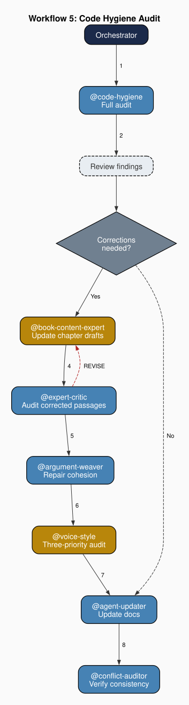
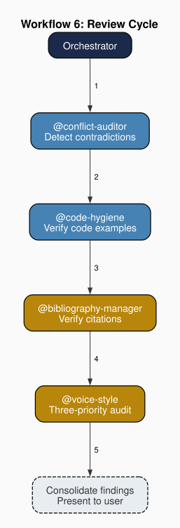

Chapter 8: The Code-Hygiene Agent
Part III: The Agents at Work
Purpose: You are the read-only auditor for the book project. You verify that every code example, agent file excerpt, pipeline description, and technical claim in chapter drafts matches the actual source files on disk. You never modify files; you report findings for other agents to act on.
1. Sixteen Audit Rules
A code-hygiene agent maintains typed audit rules, each designating a specific category of technical inaccuracy. (Since the project involves a book, supported by scripts, I could just refer to this as the "hygiene agent." However, most projects that I envision are code-centric, so I maintain this naming convention.) The rules accumulate inductively from production experience rather than from a theoretical taxonomy: each code identifies a class of error that has actually appeared in the system's output and required structured remediation. Assigning a typed code to each violation category makes findings actionable. The code tells the correcting agent what kind of error it is looking for, independently of where and why that error appeared.
In this project, the code-hygiene agent maintains sixteen rules organized in four categories.
Technical Accuracy Rules (CH-01 through CH-08):
- CH-01 Source fidelity: every code block attributed to a specific file must match that file's current content on disk.
- CH-02 Agent excerpt accuracy: every agent file excerpt must match the actual .agent.md file verbatim.
- CH-03 Pipeline description accuracy: descriptions of pipeline stages must match the daily pipeline script's behavior.
- CH-04 Directory claims: claims about directory structure must match the actual layout.
- CH-05 Single source of truth: no factual claim should be stated in two locations with different values.
- CH-06 Agent count: any stated count of agents in a repository must match the actual count.
- CH-07 File path: every file path mentioned in prose must resolve to an existing file.
- CH-08 Command claims: any shell command described must actually work when run.
Cross-Reference Rules (CH-09 through CH-11): citation verification, chapter-reference accuracy, and figure-reference accuracy.
Consistency Rules (CH-12 through CH-15): terminology consistency, agent role names, hierarchy claims, and theoretical attribution.
Formatting Rules (CH-16): paragraph formatting compliance.
The typed violation system gives the code-hygiene agent's findings a precision that unstructured editorial feedback lacks. When the agent reports that a given file contains an invented-function-name violation at a specific line (a name that does not exist in the referenced source file) the finding is actionable without further interpretation. The violation type tells the correcting agent what kind of error to look for. The file path and line number tell it where, and the rule code tells it why the passage failed audit. Structured error codes enable the same workflow that structured type systems enable in programming. They make categories of error visible, classifiable, and trackable.
For example, a CH-01 violation (source fidelity) reported at html/chapters/16-the-abstract-agent.html specifies that a code block attributed to a source file contains a function name that does not exist in that file on disk. The structured report is routed to the prose-composition agent with sufficient context to locate and correct the passage without further interpretation.
Errors common to any documentation project include paths that no longer exist, code that has been refactored since it was quoted, function names hallucinated by a drafting agent, and line-number references that have drifted. Artifacts specific to multi-agent production include copy-paste residue from templates, unreplaced placeholder tokens, terminology inconsistencies introduced when different agents draft sections with overlapping vocabulary, and bibliography keys that resolve in one file's citation context but not in another's. Unreplaced placeholder tokens divide into two sub-types: auto-resolved tokens where the rendering engine found no matching value in the project manifest, and manual-required tokens where the team-setup step was not completed. A third category comprises errors introduced by project-specific production phases such as renumbering, restructuring, or large-scale rewriting.
2. Separation of Detection and Remediation
The code-hygiene agent reads files and reports violations but does not correct them. Like the security agent (Chapter 7), it operates on a read-only tool set. It can open source files, chapter drafts, and agent documentation, but it cannot modify any of them. When it finds that a chapter quotes a function signature that no longer matches the source, it emits a structured report identifying the violation code, file, line, expected content, and actual content. The report is then routed to the agent responsible for correction.
The split between detection and remediation is the same architectural pattern that Chapter 7 describes for security enforcement. The agent best equipped to find errors is not necessarily the agent best equipped to fix them. The code-hygiene agent's competence is pattern matching: comparing quoted text against source files, checking that file paths resolve, verifying that enumerated counts match actual counts. A prose-composition agent's competence is different: reworking a paragraph so that corrected technical details integrate naturally into the surrounding argument. Combining both competences in a single agent would require it to be simultaneously a precise auditor and a fluent writer, and the incentive to produce readable prose can conflict with the incentive to report every deviation from source truth.
The separation also creates an audit trail. When the code-hygiene agent's report passes through the orchestrator to the prose-composition agent, the orchestrator can verify that every reported violation receives a corresponding correction. If the prose-composition agent revises a file, the orchestrator can re-invoke the code-hygiene agent on the revised version to confirm that the violations are resolved. The detection agent and the remediation agent serve as checks on each other. Neither can unilaterally declare an issue found and fixed without the other's confirmation.
3. Self-Referential Enforcement
The code-hygiene agent audits the chapters that describe the system it belongs to, including chapters that describe the agent itself. This creates a self-referential loop. The agent can verify claims made about its own specification, comparing what a chapter states about the agent against what its agent file actually contains. If a future revision changes the specification but the chapter is not updated, the stale-count or inaccurate-description rule detects the discrepancy in a passage describing the very agent doing the detecting.
In this project, if a chapter claims "the code-hygiene agent maintains sixteen audit rules" but the agent file has been extended to seventeen, CH-05 (single source of truth) fires: no factual claim should be stated in a chapter draft with a value that differs from the source file.
The self-referential loop is a feature the team's architecture supports because the detecting agent and the correcting agent are different. A technical-accuracy auditor finds the discrepancy. A prose-composition agent corrects the text. The auditor then re-audits the correction. At no point does the code-hygiene agent modify its own description. It merely reports that its description in the chapter does not match its actual specification. The separation of detection from remediation prevents the self-referential loop from becoming circular. The audit passes through multiple agents before returning to the code-hygiene agent for re-verification.
The self-referential property extends across all chapters that describe the team's agents. Every such chapter makes claims, which includes workflow sequences, tool restrictions, rule counts, and authority hierarchies, that are verifiable against the corresponding agent file on disk. The system being described contains the mechanism for checking its own descriptions.
In this project, this property extends to the other agent chapters in Part III. The code-hygiene agent's CH-14 (hierarchy claims) and CH-15 (theoretical attribution) rules exist specifically to audit these chapters, catching passages where the authority hierarchy is stated inconsistently across locations or where theoretical claims are attributed to the wrong author or work.
4. Position in the Production Workflow
I recommend positioning the code-hygiene agent at the front of any quality-assurance workflow in which it participates. Because its output is a structured report of violations, its findings set the correction agenda for every downstream agent in the workflow. The prose-composition agent revises only the files the code-hygiene agent has flagged, and subsequent consistency checks apply to the revised versions. Placing it earlier in the sequence ensures that later agents do not validate or build on technically inaccurate content.
In this project's Workflow 5 (Code Hygiene Audit), the code-hygiene agent is invoked first. When corrections are needed, the book-content-expert updates the affected chapter files. Any such text edits then pass through the expert-critic for prose quality auditing, the argument-weaver for cohesion repair, and the voice-style agent for a three-pass audit, in that order, before reaching the agent-updater for documentation maintenance and the conflict-auditor for consistency verification. The code-hygiene agent's report determines which files the book-content-expert will revise, and those revisions trigger the prose-quality chain before the closing governance steps run.

The code-hygiene audit is complementary to consistency-checking rather than a substitute for it. A chapter might be internally consistent across all its cross-references (passing a conflict audit) while being technically inaccurate because source files have changed since the chapter was drafted. Conversely, a chapter might accurately quote every source it cites while containing internal contradictions. Both checks are necessary because consistency and accuracy are independent properties, and a multi-agent team benefits from agents specialized for each.
In Workflow 6 (Review Cycle), the code-hygiene agent is invoked after the conflict-auditor and before the bibliography-manager. The conflict-auditor identifies contradictions between chapter claims. The code-hygiene agent identifies divergences between chapter claims and source files. Their sequential placement captures both kinds of failure in a single pass.

I recommend invoking the code-hygiene agent in workflows where content has been recently modified or is being reviewed for the first time. Where the content under review has not changed, re-auditing produces redundant findings.
In this project, Workflow 3 (Chapter Drafting) does not include a code-hygiene step because the chapter does not yet exist to audit: the check occurs in the review cycle that follows drafting. Workflow 4 (Chapter Revision) does not include a dedicated code-hygiene step because the revision itself is expected to address technical accuracy issues identified in prior audits.
5. Source Files as Ground Truth
The code-hygiene agent's audit rules share a common epistemological commitment: source files on disk are ground truth. When a chapter makes a quantitative claim about a system component (that some agent maintains a specific number of rules, or that a configuration file defines a specific number of workflow sequences) the code-hygiene agent does not evaluate whether those numbers are appropriate. It opens the referenced source file, counts the relevant items, and compares the count to the chapter's claim. The truth condition is correspondence. The chapter's description matches the source it describes, or it does not.
For example, when a chapter claims the orchestrator defines ten numbered workflows, the code-hygiene agent opens the orchestrator's agent file, counts the workflows, and reports a CH-05 violation (single source of truth) if the stated count does not match the actual count.
This ground-truth commitment resolves what would otherwise be an ambiguity in the audit process. The code-hygiene agent distinguishes between a chapter making its own analytical claims (where paraphrase is legitimate) and a chapter representing what a source file contains, where accuracy is required. A chapter may use different terms when reasoning about an agent's role, but when it represents what an agent file says, it must represent it accurately. The distinction between analytical paraphrase and source representation is the boundary the code-hygiene agent polices.
For example, when a chapter states "the navigator maintains a project map" but the navigator's agent file says "the navigator maintains a project directory structure," the discrepancy triggers a CH-02 violation (agent excerpt): because the chapter is representing what the file says, and every agent file excerpt must match the actual .agent.md verbatim.
The ground-truth commitment also extends to the authority hierarchy established in the orchestrator's constitutional rules. The code-hygiene agent enforces the top tier of this hierarchy: when a chapter's claims conflict with what is on disk, the disk wins. The chapter must be revised to match reality. The alternative (revising agent files to match chapter prose) would invert the authority hierarchy and subordinate the system's actual specification to its narrative description.
The epistemological basis for this commitment has a theoretical precedent. Hayek's analysis of knowledge in economic systems centers on the impossibility of centralizing dispersed local knowledge, but it equally affirms the necessity of external reference points: reliable claims about the environment require correspondence to conditions that exist independently of the knower's deliberation (Hayek 1945). The code-hygiene agent's audit rules embody this correspondence requirement: a chapter that describes an agent file must match the agent file, not because the drafting agent is suspected of dishonesty, but because the file is the only anchor that makes the claim verifiable. The rules also accumulate inductively — each violation code designating an error class that appeared in actual production rather than a category derived from a prior theoretical taxonomy. That inductive origin is itself consistent with Hayek's broader argument: the most reliable operative rules are those that encode contact with the environment's actual structure, emerging from experience rather than anticipation.